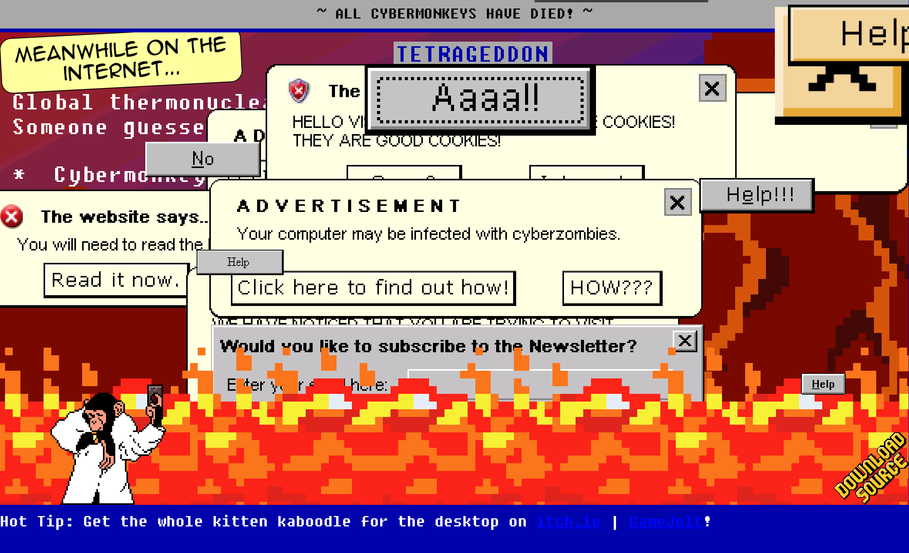

Interactive Experience Research Project
By Eileen Liu(s3946459)

http://tetrageddon.com
What was the first thing you paid attention to when interacting with the experience?
The first thing I noticed was the originality and fun of the interactive website, which was very attractive in terms of aesthetic design and interaction with the user, giving it an eye-catching feel, and the music and sound effects were interesting.
Spend two minutes with the experience and create a list of each of your discrete actions.
1. Click on the page to interact with it, the options are mostly single and will definitely take you to the desired answer in the end.
2. Click on all the interactable components to interact with the website (e.g. Cyber zombies invade the computer and are eventually cured by a guardian angel)
3. Finally there is the Cyber Monkey section, where you need to find the key to participate in the interaction
4. there are then various documents and mini-games to experience
It is a very interesting and interactive website.
What part of the experience did you spend the most time engaging with?
The section at the end where I interact with the Cyber Monkey was the one I spent the most time experiencing. Despite the fact that he only appears briefly and then dies, the interaction later on is still themed around him and integral. At the back there is a button to turn off the lights that when clicked will bring out a small pet with the option to wake him up, followed by the other amount of options buttons to download the game or experience it.
What was the most common action in your two minute interaction with the experience?
Click on the options, follow the clues, generate interactions and choose something you are interested in or curious about to interact with.
What is your impression of the intended primary goal of the interactive experience?
A very interesting and attentive interaction with a unique style of interface that generates interest.
What is your impression of how the interactive experience communicates its primary goal?
Introducing some of their basics and using non-monotonous web interaction to keep users interested, the design style including graphics music and sound effects are well integrated.
What is your impression of how the experience should be interacted with over time? (For how long and how many different times)
The first time the computer is invaded by a virus you should follow the clues and options he gives you to interact with him, after that the interaction with the Cyber Monkey is all about the exploration part, it's entirely up to the user to figure out and then find something else, giving the user a sense of autonomous control and a larger and more open horizon of thinking.
What is your impression of how the interactive experience communicates how it should be interacted with over time?
Looking at what is made from the user's point of view, rather than a dull God's perspective, requires the ability to empathise and bring a better interactive experience to the user.
What other media forms (digital or otherwise) does the experience reference?
Website Game, Animation, Action figure, Interactive exploration games.
What does this reference or references suggest to you about how you should act when engaging with it?
The options given at the beginning are fixed, as there is only one way to go as a result, so perhaps it could be considered that clicking on an option brings up two results. After that, interacting with the Cyber Monkeys is something you need to explore on your own, so perhaps some more tips to make it easier to understand would be nice.
What does this reference or references suggest to you about how you should feel when engaging with it?
Users should be intrigued and amused by the fact that the screen is not manipulable during the loading screen phase, which lasts for about seven or eight seconds before the option to click to interact appears. The user is free to interact in the subsequent interactions, and the replacement of the little mouse with a kitten makes for a very cute and unusual look.
What is the most frustrating element of the interaction to you and what makes it frustrating?
There are some links that open that don't work very well either, some require passwords some require something else, there may be copyright issues involved I don't know. Secondly, the sound effects and music were a little bit more interesting, perhaps a smaller soundtrack would have been better, but overall it was a good interaction.
What is the most satisfying element of the interaction to you and what makes it satisfying?
The whole interaction is fun and interactive, the art style is pixelated and cute, the little mouse you tap in is kitty looking, the overall style blends well, the animation of the cyber monkey dying is smooth, the whole interaction is fun including clicking on each optional thing and looking for clues, all in all very engaging.